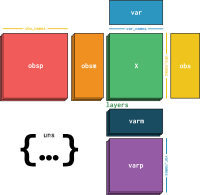
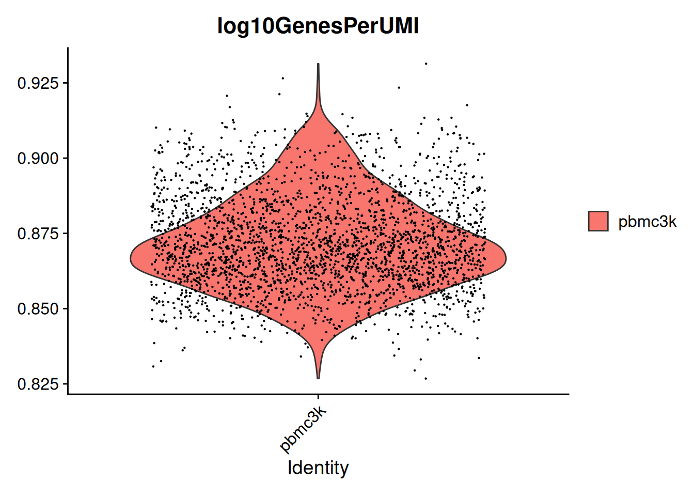
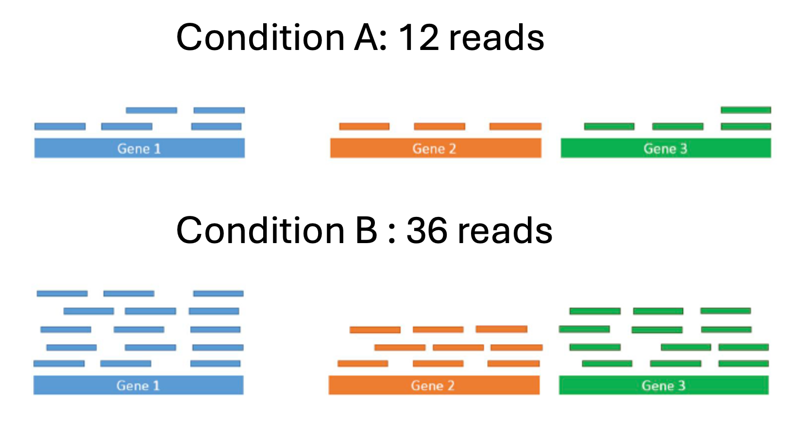
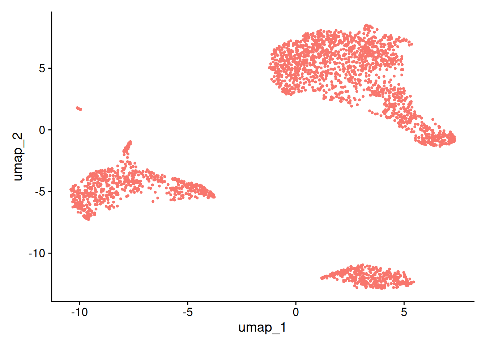
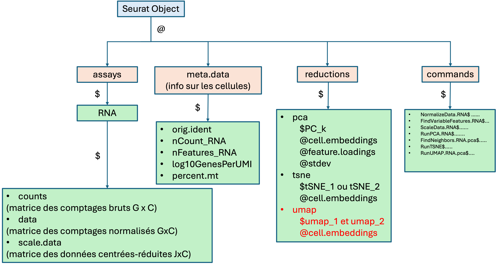
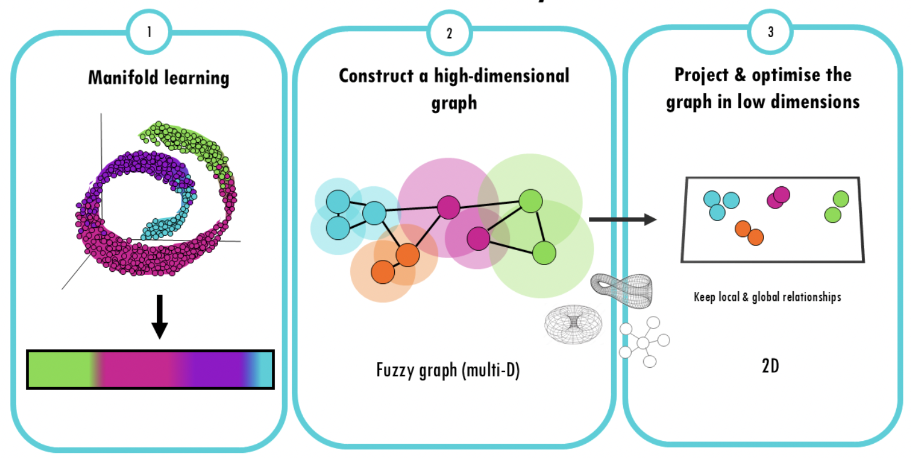
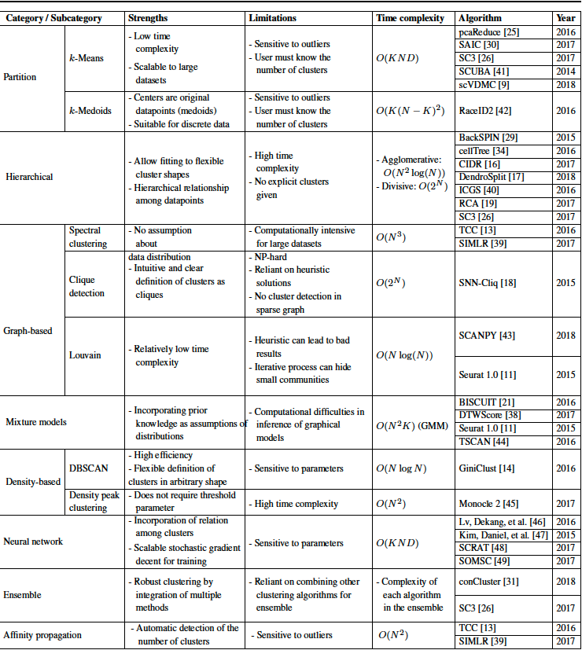
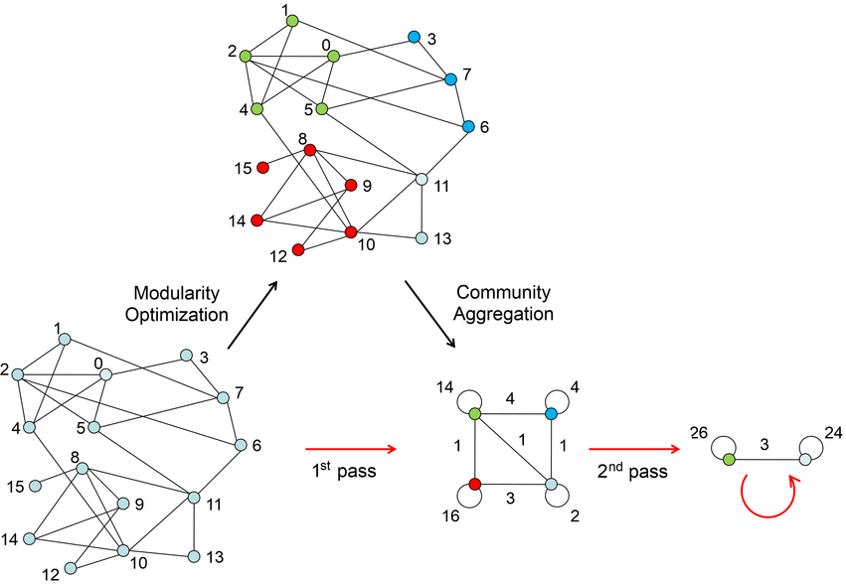
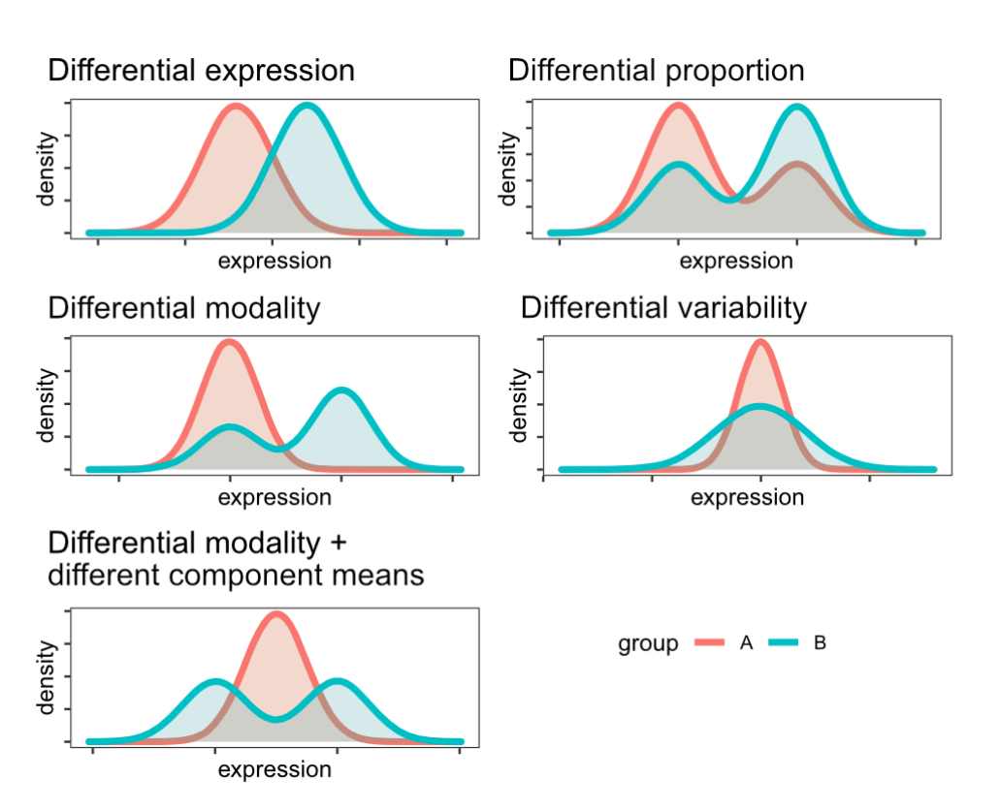

'SeuratObject' was built under R 4.4.0 but the current version is
4.4.2; it is recomended that you reinstall 'SeuratObject' as the ABI
for R may have changed
Attaching package: 'SeuratObject'
The following objects are masked from 'package:base':
intersect, t
library(DESeq2)
Loading required package: S4Vectors
Loading required package: stats4
Loading required package: BiocGenerics
Attaching package: 'BiocGenerics'
The following object is masked from 'package:SeuratObject':
intersect
The following objects are masked from 'package:stats':
IQR, mad, sd, var, xtabs
Welcome to Bioconductor
Vignettes contain introductory material; view with
'browseVignettes()'. To cite Bioconductor, see
'citation("Biobase")', and for packages 'citation("pkgname")'.
Attaching package: 'Biobase'
The following object is masked from 'package:MatrixGenerics':
rowMedians
The following objects are masked from 'package:matrixStats':
anyMissing, rowMedians
Attaching package: 'SummarizedExperiment'
The following object is masked from 'package:Seurat':
Assays
The following object is masked from 'package:SeuratObject':
Assays
Loading required package: ggraph
Attaching package: 'ggraph'
The following object is masked from 'package:sp':
geometry
library(SeuratData)
── Installed datasets ──────────────────────────────── SeuratData v0.2.2.9002 ──
✔ ifnb 3.1.0 ✔ stxBrain 0.1.2
✔ pbmc3k 3.1.4
────────────────────────────────────── Key ─────────────────────────────────────
✔ Dataset loaded successfully
❯ Dataset built with a newer version of Seurat than installed
❓ Unknown version of Seurat installed
library(reshape2)
Attaching package: 'reshape2'
The following object is masked from 'package:tidyr':
smiths
Attaching package: 'gridExtra'
The following object is masked from 'package:dplyr':
combine
The following object is masked from 'package:Biobase':
combine
The following object is masked from 'package:BiocGenerics':
combine
Scanpy is a scalable toolkit for analyzing single-cell gene expression data built jointly with anndata. It includes preprocessing, visualization, clustering, trajectory inference and differential expression testing. The Python-based implementation efficiently deals with datasets of more than one million cells.
Package le plus populaire en Python
SCANPY: large-scale single-cell gene expression data analysis F. Alexander Wolf, Philipp Angerer, Fabian J. Theis Genome Biology 2018 Feb 06. doi: 10.1186/s13059-017-1382-0.
Juliá M, Telenti A, Rausell A. Sincell: an R/Bioconductor package for statistical assessment of cell-state hierarchies from single-cell RNA-seq. Bioinformatics. 2015 Oct 15;31(20):3380-2. doi: 10.1093/bioinformatics/btv368. Epub 2015 Jun 22. PMID: 26099264; PMCID: PMC4595899.
Minzhe Guo, Hui Wang, S. Steve Potter, Jeffrey A. Whitsett, Yan Xu. SINCERA: A Pipeline for Single-Cell RNA-Seq Profiling Analysis. PLoS Comput Biol. 2015 Nov 24;11(11):e1004575. doi: 10.1371/journal.pcbi.1004575. eCollection 2015.
Scedar (Single-cell exploratory data analysis for RNA-Seq) is a reliable and easy-to-use Python package for efficient visualization, imputation of gene dropouts, detection of rare transcriptomic profiles, and clustering of large-scale single cell RNA-seq (scRNA-seq) datasets.
Zhang Y, Kim MS, Reichenberger ER, Stear B, Taylor DM (2020) Scedar: A scalable Python package for single-cell RNA-seq exploratory data analysis. PLOS Computational Biology 16(4): e1007794. (https://doi.org/10.1371/journal.pcbi.1007794)
\(\ldots\)
1.5.3 Attention au type d’objet
Expliquer que chaque pipeline a son type d’Objet
Seurat en R \(\longrightarrow\) Seurat Object
Scanpy en python \(\longrightarrow\) AnnData class
SingleCellExperiment
Il existe des fonctions qui permettent de passer de l’un à l’autre
Dans la suite on va travailler avec Seurat
A VOIR COMMENT ON ARTICULE AVEC AnnData juste après. Peut-etre le mettre dans pour aller plus loin quand on veut basculer dans scanpy et/ou quand on doit passer par sce.
1.5.4 AnnData

{width=“50%” fig-align:“center”}
X: Données de comptage sous forme de matrice creuse (sparse):
adata.X<100x2000 sparse matrix of type'<class 'numpy.float32'>'with126526 stored elements in Compressed Sparse Row format>
adata.obs_names = [f"Cell_{i:d}"for i inrange(adata.n_obs)]adata.var_names = [f"Gene_{i:d}"for i inrange(adata.n_vars)]print(adata.obs_names[:10])Index(['Cell_0', 'Cell_1', 'Cell_2', 'Cell_3', 'Cell_4', 'Cell_5', 'Cell_6','Cell_7', 'Cell_8', 'Cell_9'], dtype='object')
obsm/varm : Métriques ou des données dérivées supplémentaires liées aux observations / variables (Résultat ACP)
uns: Données non structurées (paramètres de l’analyse, autres métadonnées, …)
obsp/varp: Relations par paires entre les cellules
1.6 Exemple pour la suite
1.6.1 Présentation des données
Données de Peripheral Blood Mononuclear Cells (PBMC) de 10X Genomics.
2700 cellules séquencées en Illumina NextSeq 500.
Téléchargez le jeu de données ici ou sur le dépot git de la formation
Dans le dossier “…/hg19/” on a trois fichiers
barcodes.tsv
genes.tsv
matrix.mtx
1.6.2 Création de l’objet Seurat
On commence par lire les données en sortie de CellRanger de 10X à l’aide de la fonction Read10X().
Remarque : pour les formats h5 plus récents, utilisez la fonction Read10X_h5()
# Load the PBMC datasetpbmc.data <-Read10X(data.dir ="data/pbmc3k_filtered_gene_bc_matrices/filtered_gene_bc_matrices/hg19/")
Création ensuite de l’objet Seurat avec CreateSeuratObject() :
# Initialize the Seurat object with the raw (non-normalized data).pbmc <-CreateSeuratObject(counts = pbmc.data, project ="pbmc3k", min.cells =3, min.features =200)
Warning: Feature names cannot have underscores ('_'), replacing with dashes
('-')
class(pbmc)
[1] "Seurat"
attr(,"package")
[1] "SeuratObject"
pbmc
An object of class Seurat
13714 features across 2700 samples within 1 assay
Active assay: RNA (13714 features, 0 variable features)
1 layer present: counts
1.6.3 Contenu du SO
\(C\)= 2700 cellules décrites par `\(G=\) 1.3714^{4}gènes
Les comptages bruts sont dans pbmc@assays$RNA$counts
VlnPlot(pbmc, features =c("nFeature_RNA", "nCount_RNA"), ncol =2)
Warning: Default search for "data" layer in "RNA" assay yielded no results;
utilizing "counts" layer instead.
Mettre le schema evolué avec meta.data
2.1.2 QC metrics
Calculate some additional metrics for plotting:
number of genes detected per UMI: this metric with give us an idea of the complexity of our dataset (more genes detected per UMI, more complex our data)
pbmc$log10GenesPerUMI <-log10(pbmc$nFeature_RNA) /log10(pbmc$nCount_RNA)VlnPlot(pbmc, features =c("log10GenesPerUMI"))
Warning: Default search for "data" layer in "RNA" assay yielded no results;
utilizing "counts" layer instead.

mitochondrial ratio: this metric will give us a percentage of cell reads originating from the mitochondrial genes The number of genes per UMI for each cell is quite easy to calculate, and we will log10 transform the result for better comparison between samples. function PercentageFeatureSet()
On ne conserve que \(C=\) 2638 cellules pour la suite de l’étude.
2.2 Normalisation
2.2.1 Why do we need to normalize the data ?
We need to remove technical biases in order to
to be able to compare cells

Images from https://www.biostars.org/p/349881/
The 2 libraries have the same RNA composition. But the condition B has 3 times more reads than the condition A. We need to correct for differences in library size.
to be able to compare genes
Take into account the sparsity of the count matrix
2.2.2 Normalization in Seurat
Many possible strategies for normalized data
In Seurat, function NormalizeData(object,normalization.method= ...,)
“LogNormalize” : Feature counts for each cell are divided by the total counts for that cell and multiplied by the scale.factor. This is then natural-log transformed using log1p
“CLR” : Applies a centered log ratio transformation
“RC” (Relative counts): Feature counts for each cell are divided by the total counts for that cell and multiplied by the scale.factor. No log-transformation is applied. For counts per million (CPM) set scale.factor = 1e6
“SCTransform” : il faut passer par une autre fonction SCTransform() The use of SCTransform replaces the need to run NormalizeData, FindVariableFeatures, or ScaleData (described below.) In Seurat v5, SCT v2 is applied by default. You can revert to v1 by setting vst.flavor = ‘v1’
2.2.3 Several normalization strategies in Seurat
In Seurat, function NormalizeData(object,normalization.method= ...,)
“LogNormalize” : Feature counts for each cell are divided by the total counts for that cell and multiplied by the scale factor (\(sf=100000\) default). Then this is log-transformed using \(\log(.+1)\)
\[
\log\left(\frac{x_{gc}}{\underset{g}{\sum} x_{gc}} \times sf +1\right)
\]
“CLR” : Applies a centered log ratio transformation
“RC” (Relative counts): Feature counts for each cell are divided by the total counts for that cell and multiplied by the scale factor (\(s=1e6\) default). But no log-transformation is applied.
\[
\frac{x_{gc}}{\underset{g}{\sum} x_{gc}} \times s
\]
“SCTransform” : implemented in the function SCTransform(). The use of SCTransform replaces the need to run NormalizeData, FindVariableFeatures, or ScaleData (described below).
It utilizes the Pearson residuals from NB regression as input to standard dimension reduction techniques (see Hafemeister and Satija, 2019)
Shifts the expression of each gene, so that the mean expression across cells is 0
Scales the expression of each gene, so that the variance across cells is 1 This step gives equal weight in downstream analyses, so that highly-expressed genes do not dominate
The results of this are stored in pbmc[[“RNA”]]$scale.data By default, only variable features are scaled. You can specify the features argument to scale additional features
Dans Seurat, fonction ScaleData()
pbmc<-ScaleData(pbmc) #features = Default is variable features J (=2000 par défaut)
Centering and scaling data matrix
dim(pbmc@assays$RNA$scale.data) # on a plus que J=2000 gènes
[1] 2000 2638
#d'où des soucis (warnings) dans la suite mais c'est plus rapide pour la formation ????pbmc[["RNA"]]$scale.data[10:20,1:10]
Uniform manifold approximation and projection is a dimension reduction technique that can be used not only for visualization similarly to t-SNE but also for general non-linear dimension reduction. Compared with t-SNE, UMAP retains more global structure with superior run-time performance (McInnes et al., 2018; Becht et al., 2019).
The algorithm is based on three assumptions about the data: (a) the data are uniformly distributed on the Riemannian manifold; (b) the Riemannian metric is locally constant (or can be approximated); and (c) the manifold is locally connected. According to these assumptions, the manifold with fuzzy topology can be modeled. The embedding is found by searching the low-dimensional projection of the data with the closest equivalent fuzzy topology. In terms of model construction, UMAP includes two steps: (1) building a particular weighted k-neighbor graph using the nearest-neighbor descent algorithm (Dong et al., 2011) and (2) computing a low-dimensional representation which can preserve desired characteristics of this graph.
Warning: The default method for RunUMAP has changed from calling Python UMAP via reticulate to the R-native UWOT using the cosine metric
To use Python UMAP via reticulate, set umap.method to 'umap-learn' and metric to 'correlation'
This message will be shown once per session
DimPlot(pbmc, reduction ="umap")+NoLegend()


2.3.9 UMAP
UMAP = Uniform manifold approximation and projection
It is a general non-linear dimension reduction method
Compared with t-SNE, UMAP retains more global structure with superior run-time performance
(McInnes et al., 2018; Becht et al., 2019).

For more details :
A youtube video describing the process can be found here.
A comparison between PCA, t-SNE and UMAP can be found here
**************************************************|
13:40:54 Writing NN index file to temp file /tmp/RtmpIgTjkp/file6196289ec32f
13:40:54 Searching Annoy index using 1 thread, search_k = 3000
13:40:55 Annoy recall = 100%
13:40:56 Commencing smooth kNN distance calibration using 1 thread with target n_neighbors = 30
13:40:58 Initializing from normalized Laplacian + noise (using RSpectra)
13:40:58 Commencing optimization for 500 epochs, with 105140 positive edges
13:40:58 Using rng type: pcg
13:41:03 Optimization finished
DimPlot(pbmc, reduction ="umap")+NoLegend()
2.4 Cells clustering
2.4.1 Clustering objective
Goal : organizing cells into groups whose members are similar in some way
Fundamental question : What is meant by “similar cells”?
The number of clusters \(K\) is unknown
Typical clustering methods :
Hierarchical clustering (CAH)
Kmeans clustering
Graph-based clustering
Model-based clustering
…
2.4.2 Some methods

2.4.3 Louvain’s algorithm in Seurat
Steps of Louvain algo
Calculate k-nearest neighbors and construct the SNN graph (based on Euclidean distance in PCA space)
Optimize a modularity function to determine clusters
Sensitive choice of the resolution parameter \(r\) (involve the number of clusters K)

Seurat
Functions FindNeighbour() + FindCluster()
2.4.4 Example
Clustering for resolution \(0.5\)
pbmc <-FindClusters(pbmc, resolution =0.5)
Modularity Optimizer version 1.3.0 by Ludo Waltman and Nees Jan van Eck
Number of nodes: 2638
Number of edges: 95927
Running Louvain algorithm...
Maximum modularity in 10 random starts: 0.8728
Number of communities: 9
Elapsed time: 0 seconds
Modularity Optimizer version 1.3.0 by Ludo Waltman and Nees Jan van Eck
Number of nodes: 2638
Number of edges: 95927
Running Louvain algorithm...
Maximum modularity in 10 random starts: 0.9623
Number of communities: 4
Elapsed time: 0 seconds
Modularity Optimizer version 1.3.0 by Ludo Waltman and Nees Jan van Eck
Number of nodes: 2638
Number of edges: 95927
Running Louvain algorithm...
Maximum modularity in 10 random starts: 0.9346
Number of communities: 7
Elapsed time: 0 seconds
Modularity Optimizer version 1.3.0 by Ludo Waltman and Nees Jan van Eck
Number of nodes: 2638
Number of edges: 95927
Running Louvain algorithm...
Maximum modularity in 10 random starts: 0.9091
Number of communities: 7
Elapsed time: 0 seconds
Modularity Optimizer version 1.3.0 by Ludo Waltman and Nees Jan van Eck
Number of nodes: 2638
Number of edges: 95927
Running Louvain algorithm...
Maximum modularity in 10 random starts: 0.8890
Number of communities: 9
Elapsed time: 0 seconds
Modularity Optimizer version 1.3.0 by Ludo Waltman and Nees Jan van Eck
Number of nodes: 2638
Number of edges: 95927
Running Louvain algorithm...
Maximum modularity in 10 random starts: 0.8728
Number of communities: 9
Elapsed time: 0 seconds
Modularity Optimizer version 1.3.0 by Ludo Waltman and Nees Jan van Eck
Number of nodes: 2638
Number of edges: 95927
Running Louvain algorithm...
Maximum modularity in 10 random starts: 0.8564
Number of communities: 10
Elapsed time: 0 seconds
Modularity Optimizer version 1.3.0 by Ludo Waltman and Nees Jan van Eck
Number of nodes: 2638
Number of edges: 95927
Running Louvain algorithm...
Maximum modularity in 10 random starts: 0.8411
Number of communities: 10
Elapsed time: 0 seconds
Modularity Optimizer version 1.3.0 by Ludo Waltman and Nees Jan van Eck
Number of nodes: 2638
Number of edges: 95927
Running Louvain algorithm...
Maximum modularity in 10 random starts: 0.8281
Number of communities: 11
Elapsed time: 0 seconds
Modularity Optimizer version 1.3.0 by Ludo Waltman and Nees Jan van Eck
Number of nodes: 2638
Number of edges: 95927
Running Louvain algorithm...
Maximum modularity in 10 random starts: 0.8159
Number of communities: 11
Elapsed time: 0 seconds
Modularity Optimizer version 1.3.0 by Ludo Waltman and Nees Jan van Eck
Number of nodes: 2638
Number of edges: 95927
Running Louvain algorithm...
Maximum modularity in 10 random starts: 0.8036
Number of communities: 11
Elapsed time: 0 seconds
Goal: find genes differentially expressed between 2 cell groups (\(\mathcal G_1\) and \(\mathcal G_2\))
Markers for a single cluster \(\mathcal C_k\), compared to all other cells: \(\mathcal G_1 = \mathcal C_k\) and \(\mathcal G_2 = \{1,\ldots,n\} \backslash \mathcal C_k\)
For each gene, we want to test a differentially expression
Seurat
Functions FindMarkers() and FindAllMarkers()
2.5.2 Several situations

2.5.3 Wilcoxon test
For each gene, test whether the two expression samples \(\underline{X}^{(1)}=(X_{gc}; c\in\mathcal G_1)\) and \(\underline{X}^{(2)}=(X_{gc}; c\in\mathcal G_2)\) have the same probability distribution
Wilcoxon test: non parametric test based on ranks
Multiple testing correction (Bonferroni in Seurat)
The object contains data from human PBMC from two conditions, interferon-stimulated and control cells (stored in the stim column in the object metadata).
ifnb
An object of class Seurat
14053 features across 13999 samples within 1 assay
Active assay: RNA (14053 features, 0 variable features)
2 layers present: counts, data
dim(ifnb)
[1] 14053 13999
table(ifnb$orig.ident) #table(ifnb$stim)
IMMUNE_CTRL IMMUNE_STIM
6548 7451
Aim: integrate the two conditions, so that we can jointly identify cell subpopulations across datasets, and then explore how each group differs across conditions
3.1.2 Multiple “layers”
Seurat
In Seurat v5, all the data in one Seurat object, but simply split it into multiple layers
In previous versions, data had to be represented in different Seurat objects.
ifnb[["RNA"]] <-split(ifnb[["RNA"]], f = ifnb$stim)ifnb
An object of class Seurat
14053 features across 13999 samples within 1 assay
Active assay: RNA (14053 features, 0 variable features)
4 layers present: counts.CTRL, counts.STIM, data.CTRL, data.STIM
dim(ifnb[["RNA"]]$counts.CTRL)
[1] 14053 6548
dim(ifnb[["RNA"]]$counts.STIM)
[1] 14053 7451
3.1.3 From count matrices to Seurat object
Create a Seurat object for each condition with CreateSeuratObject()
Create a common variable “condition” (here stim in the example)
Merge the Seurat object with merge()
See the construction of ifnb in exercice.
3.2 Normalization and HVG
3.2.1 Normalization
Perform normalization as described above for each counts matrix (data.CTRL and data.STIM)
Modularity Optimizer version 1.3.0 by Ludo Waltman and Nees Jan van Eck
Number of nodes: 13999
Number of edges: 585574
Running Louvain algorithm...
Maximum modularity in 10 random starts: 0.9034
Number of communities: 13
Elapsed time: 4 seconds
CD14 Mono CD4 Naive T CD4 Memory T CD16 Mono B CD8 T
4362 2504 1762 1044 978 814
T activated NK DC B Activated Mk pDC
633 619 472 388 236 132
Eryth
55
3.5 Differential analysis
3.5.1 Warnings
The term “differential analysis” is vague/large
It is important to well formulate the question and know the data design
Samarendra et al, Entropy 22
Nguyen et al. Nature Comm. 23
3.5.2 Q: Identify conserved cell type markers
Goal: identify canonical cell type marker genes that are conserved across conditions
In function FindConservedMarkers(): DE gene testing for each condition + combine pvalues, based on a function of MetaDE R package (by default, Tippett’s method). For more details on the methods available in metap package, see here.
#| echo: false#| message: false#| warning: falseIdents(ifnb)<-ifnb$seurat_annotationsifnb_neb2<-scToNeb(obj=ifnb[,ICD14Mono],assay="RNA",id="donor_id",pred=c("stim"))df2 =model.matrix(~stim, data=ifnb_neb2$pred)data_g2 =group_cell(count=ifnb_neb2$count,id=ifnb_neb2$id,pred=df2) # il faut grouper les cellules par indiv avant de faire nebulare2 =nebula(data_g2$count,data_g2$id,pred=data_g2$pred)#mean(p.adjust(re2$summary$p_stimSTIM,method="BH")<0.01)ifnbNebSumm2<-re2$summaryifnbNebSumm2$padjStim<-p.adjust(re2$summary$p_stimSTIM,method="BH")ifnbNebSumm2<-ifnbNebSumm2%>%filter(padjStim <0.01)%>%arrange(desc(abs(logFC_stimSTIM))) #head(ifnbNebSumm2)
library(randomForest)datatrain<-t(as.matrix(ifnb@assays$RNA$scale.data[,ICD14Mono]))dataRF<-data.frame(datatrain,Cl =as.factor(ifnb$stim[ICD14Mono]))resRF<-randomForest(Cl ~ ., data = dataRF,importance=T,proximity=T)
varImpPlot(resRF)
table(resRF$predicted,dataRF$Cl)
CTRL STIM
CTRL 2157 0
STIM 10 2086
3.6 Gene functional analysis
Gene enrichment analysis identifies biological pathways or functions that are overrepresented in a set of genes of interest.
In functional analysis of biological pathway, the biologist is always the expert :
The pathway database is determinent.
You decide the relationship and biological significance of the data you want to present.
3.6.1 Why ?
The interpretation of the list of differentially expressed genes can be challenging due to two scenarios:
The list is so long that it becomes cumbersome and time-consuming to analyze and interpret each gene individually.
Some genes may have low p-values but not low enough to meet the given threshold for significance.
In such situations, enrichment analysis can be employed to enhance the understanding of our dataset.
3.6.2 Approaches
Over Representation Analysis (ORA): This method determines whether the differentially expressed genes are enriched in specific pathways or ontological groups. It assesses whether the observed number of genes in a particular pathway or gene ontology term is higher than what would be expected by chance.
Gene Set Enrichment Analysis (GSEA): GSEA evaluates whether a pre-defined set of genes (gene set) shows statistically significant differences between two or more biological conditions. Instead of focusing on individual genes, GSEA considers the collective behavior of genes within a gene set to identify enriched biological pathways or functional categories.
3.6.3 From (Gene) Symbols to (Gene) IDs
Working with gene IDs, such as Ensembl IDs, instead of gene symbols is important for reproducibility in gene enrichment analysis due to the following reasons:
Gene Symbol Ambiguity: Gene symbols can be ambiguous, as multiple genes can have the same symbol. This can lead to confusion and errors when performing analyses, especially when using external databases or tools.
Uniqueness: Gene IDs are unique identifiers assigned to specific genes. They provide a standardized and consistent way of referring to genes across different datasets and analyses, ensuring accuracy and reproducibility.
Consistent Annotation: Gene IDs are linked to comprehensive and up-to-date gene annotation databases, such as Ensembl. These databases provide detailed information about gene features, genomic locations, functional annotations, and other relevant metadata.
Cross-Species Comparisons: Gene IDs enable seamless comparisons of gene enrichment results across different species.
Data Integration: Gene IDs facilitate data integration across multiple experiments or studies. They enable the merging of different datasets, such as gene expression data or functional annotations, based on a common identifier.
Long-term Accessibility: Gene IDs are stable and persist over time.
Using Gene IDs: enhances reproducibility in gene enrichment analysis by providing unique and standardized gene identifiers, enabling consistent annotation, supporting cross-species comparisons, facilitating data integration, and ensuring long-term accessibility of results.
3.6.4bitr: Biological Id TranslatoR
require(clusterProfiler)
Loading required package: clusterProfiler
clusterProfiler v4.14.6 Learn more at https://yulab-smu.top/contribution-knowledge-mining/
Please cite:
T Wu, E Hu, S Xu, M Chen, P Guo, Z Dai, T Feng, L Zhou, W Tang, L Zhan,
X Fu, S Liu, X Bo, and G Yu. clusterProfiler 4.0: A universal
enrichment tool for interpreting omics data. The Innovation. 2021,
2(3):100141
Attaching package: 'clusterProfiler'
The following object is masked from 'package:purrr':
simplify
The following object is masked from 'package:IRanges':
slice
The following object is masked from 'package:S4Vectors':
rename
The following object is masked from 'package:stats':
filter
'select()' returned 1:1 mapping between keys and columns
Warning in bitr(rownames(genetop_wilcox1), fromType = "SYMBOL", toType =
"ENTREZID", : 10% of input gene IDs are fail to map...
eg |>as_tibble() |> rmarkdown::paged_table()
3.6.5 Ensembl BioMart
BioMart provides a flexible and intuitive interface to explore and retrieve genomic data from Ensembl. It allows you to filter and select specific data attributes, enabling you to extract the information that is most relevant to your research or analysis.
Accessing BioMart: Go to the Ensembl website (https://www.ensembl.org) and click on the “BioMart” option in the menu to access the BioMart interface.
Choosing a Dataset: In the BioMart interface, you will see several tabs. Start by selecting the “CHOOSE DATABASE” tab. Here, you can choose the dataset you want to retrieve data from, such as the Ensembl genes, variation, or sequence databases.
Selecting Filters: Once you’ve chosen the dataset, click on the “CHOOSE FILTERS” tab. Here, you can specify criteria to filter the data you are interested in. For example, you can filter by gene ID, chromosome location, gene biotype, or other attributes.
Selecting Attributes: After setting your filters, switch to the “CHOOSE ATTRIBUTES” tab. Here, you can select the specific attributes or data fields you want to retrieve for the filtered data. These attributes can include gene names, chromosomal coordinates, functional annotations, or any other available information.
Retrieving Results: Once you have chosen the desired attributes, switch to the “RESULTS” tab. Click on the “Results” button to retrieve the data based on your chosen filters and attributes. The results will be displayed in a table format.
The getBM() function is the primary query function in biomaRt.
It has four main arguments:
attributes: is a vector of attributes that one wants to retrieve (= the output of the query).
filters: is a vector of filters that one wil use as input to the query.
values: a vector of values for the filters. In case multple filters are in use, the values argument requires a list of values where each position in the list corresponds to the position of the filters in the filters argument (see examples below).
mart: is an object of class Mart, which is created by the useEnsembl() function.
3.6.9.1 Get proper annotation for AnnotationHub using BiocHubsShiny:
The BiocHubsShiny package allows users to visually explore the AnnotationHub and ExperimentHub resources via shiny. It provides a tabular display of the available resources with the ability to filter and search through the column fields.1
BiocHubsShiny::BiocHubsShiny()library("AnnotationHub")hub <-AnnotationHub()## Select rows in the tableens.db <- hub[['AH119325']]
These pathway collections databases serve as valuable resources for researchers to explore and analyze biological pathways, functional annotations, and disease associations. They facilitate the interpretation of gene expression data, identify key pathways related to specific biological processes or diseases, and contribute to a deeper understanding of biological systems.
GO is a widely used database that categorizes genes into three main ontologies: molecular function, biological process, and cellular component. It provides a standardized vocabulary to describe gene functions and interactions, allowing researchers to annotate and analyze gene sets in a structured manner.
Molecular Function
Describes the elemental activities of a gene product at the molecular level.
Biological Process
Represents sets of molecular events or biological pathways achieved by one or more gene products.
Biological process terms describe the larger, coordinated series of events that involve multiple molecular functions.
Cellular Component
Refers to the subcellular structures, locations, and macromolecular complexes in which gene products are active.
Cellular component terms describe the physical compartments or structures where gene products function.
Over Representation Analysis (ORA) is a widely used approach to determine whether known biological functions or processes are over-represented (= enriched) in an experimentally-derived gene list, e.g. a list of differentially expressed genes (DEGs).
From bioinformatics-core-shared-training.github.io/Bulk_RNAseq_Course_Apr22
3.6.15 Over Representation analysis
From bioinformatics-core-shared-training.github.io/Bulk_RNAseq_Course_Apr22
3.6.16 Fisher Exact Test
The Fisher Exact Test is a statistical method used to determine whether there is a significant association between two categorical variables, such as the presence or absence of a particular gene and a particular phenotype or disease.
In the context of gene enrichment analysis, the Fisher Exact Test is used to determine whether there is a significant association between a set of genes and a particular biological pathway or process.
Hypothesis:
\(H_0\): The categories are independent.
\(H_1\): The categories are dependent.
In Gene Enrichment, we want to see as genes as possible in the pathway that are DE, so we want a one sided test with greater hypothesis.
3.6.17 Fisher Exact Test
The p-value can be calculated by hypergeometric distribution2:
For a gene set negative regulation of protein serine/threonine kinase activity (GO:0071901), I have :
18986 (\(N\)) number of genes in the analysis (background distribution).
86 (\(M\)) genes within that distribution that are in the pathway of interest \(C\).
83 (\(n\)) genes of interest (\(S\)).
5 (\(k\)) genes that are in \(S\) and \(C\).
And we can draw this contingency table:
Contingency table: DE genes against negative regulation of protein serine/threonine kinase activity (GO:0071901)
Genes of interest
No
Total
Yes
Pathway of interest: yes
5
81
86
Pathway of interest: no
78
18822
18900
Pathway of interest: Total
83
18903
18986
3.6.25 Tests with R
3.6.25.1 Using Hypergeometric distribution
all_probas <-dhyper(0:M, M, N-M, n,log=F)
3.6.26 Tests with R
3.6.26.1 Using Hypergeometric distribution
3.6.26.2 Summing all probability having \(k=32\) or more :
dhyper(k:M, M, N-M, n,log=F) %>%sum()
[1] 3.729563e-05
3.6.26.3 Using the distribution function directly
phyper(k-1, M, N-M, n,lower.tail =F)
[1] 3.729563e-05
Or even if we want to replicate the formula :
1-phyper(k-1, M, N-M, n)
[1] 3.729563e-05
3.6.27 Using Fisher Test directly
fisher.test(d, alternative ="greater")
Fisher's Exact Test for Count Data
data: d
p-value = 3.73e-05
alternative hypothesis: true odds ratio is greater than 1
95 percent confidence interval:
5.584233 Inf
sample estimates:
odds ratio
14.88682
The information necessary to associate spots with their physical position on the tissue image
4.1.2 Example
Description:
Mouse brain spatial expression for the anterior region
\(G=31053\) genes across \(C=2696\) spots
InstallData("stxBrain")
Warning: The following packages are already installed and will not be
reinstalled: stxBrain
brain <-LoadData("stxBrain", type ="anterior1")
Validating object structure
Updating object slots
Ensuring keys are in the proper structure
Ensuring keys are in the proper structure
Ensuring feature names don't have underscores or pipes
Updating slots in Spatial
Updating slots in anterior1
Validating object structure for Assay5 'Spatial'
Validating object structure for VisiumV2 'anterior1'
Object representation is consistent with the most current Seurat version
brain
An object of class Seurat
31053 features across 2696 samples within 1 assay
Active assay: Spatial (31053 features, 0 variable features)
1 layer present: counts
1 spatial field of view present: anterior1
SpatialFeaturePlot(brain, features ="nCount_Spatial") +theme(legend.position ="right")
4.1.3 Pipeline
Normalization
Dimension reduction
Clustering : take into account spatial information
Marker genes
….
Detecting spatially-variable features
4.1.4 Normalization
Variance in molecular counts across spots is not just technical in nature, but also is dependent on the tissue anatomy. Standard approaches (such as the LogNormalize() function), which force each data point to have the same underlying ‘size’ after normalization, can be problematic.
Recommend using sctransform (Hafemeister and Satija, Genome Biology 2019)
regularized negative binomial models of gene expression in order to account for technical artifacts while preserving biological variance. UMI counts across cells in a dataset are modeled using a generalized linear model (GLM). The total UMI count per cell is used as an offset in the GLM.
\[
x_{gc}\sim\mbox{NB}(\mu_{gc},\theta_g) \hspace{0.5cm} \ln(\mu_{gc})= \beta_{0g}+\ln(n_c)
\] with \(n_c = \sum_g x_{gc}\). We perform three steps to remove technical noise and perform variance stabilization:
Step 1: the inverse overdispersion parameter \(\theta\) is individually estimated using a subset of genes (2000 by default), which are sampled in a density-dependent manner according to their average abundance. Step 2: we calculate a smoothed curve that characterizes the global relationship between \(\mu\) and \(\theta\), thereby regularizing \(\theta\) estimates as a function of gene mean. We perform the same regularization for the intercept parameter. We use the geometric mean to estimate gene abundance, which is more robust to outlier values in scRNA-seq. As outlier values can originate from multiple sources including the presence of cell doublets, errors in UMI collapsing, or ambient RNA, we have empirically improved performance when using the geometric mean instead of the arithmetic mean. Although sctransform supports multiple estimators for \(\theta\), we recommend the use of glmGamPoi, an alternate estimator that is more robust and faster.
Step 3: we use the regularized parameter estimates to calculate Pearson residuals \(Z_{gc}\). The “residual variance” for a gene represents the remaining variation in gene expression that is not explained by the sctransform model,
sctransform normalizes the data, detects high-variance features, and stores the data in the SCT assay.
`vst.flavor` is set to 'v2' but could not find glmGamPoi installed.
Please install the glmGamPoi package for much faster estimation.
--------------------------------------------
install.packages('BiocManager')
BiocManager::install('glmGamPoi')
--------------------------------------------
Falling back to native (slower) implementation.
Warning in glm.nb(formula = as.formula(new_formula), data = data): alternation
limit reached
brain@assays$SCT
SCTAssay data with 17668 features for 2696 cells, and 1 SCTModel(s)
Top 10 variable features:
Ttr, Hbb-bs, Mbp, Plp1, Hba-a1, Ptgds, Penk, S100a5, Hba-a2, Fabp7
##-> englobe etape de normalisation, HVG, scale dataVariableFeaturePlot(brain)
SpatialFeaturePlot(brain, features =c("Ttr","Hbb-bs"))
Fonctions interaction dans Seurat non montrées ici
4.1.7 Spatial variable features
Identify features whose variability in expression can be explained to some degree by spatial location
An alternative approach, implemented in FindSpatiallyVariables(), is to search for features exhibiting spatial patterning in the absence of pre-annotation. The default method (method = ‘markvariogram), is inspired by the Trendsceek, which models spatial transcriptomics data as a mark point process and computes a ‘variogram’, which identifies genes whose expression level is dependent on their spatial location. More specifically, this process calculates gamma(r) values measuring the dependence between two spots a certain “r” distance apart. By default, we use an r-value of ‘5’ in these analyses, and only compute these values for variable genes (where variation is calculated independently of spatial location) to save time. We note that there are multiple methods in the literature to accomplish this task, including SpatialDE, and Splotch. We encourage interested users to explore these methods, and hope to add support for them in the near future.
For a more efficient implementation of the Morans I calculation,
(selection.method = 'moransi') please install the Rfast2 package
--------------------------------------------
install.packages('Rfast2')
--------------------------------------------
After installation of Rfast2, Seurat will automatically use the more
efficient implementation (no further action necessary).
This message will be shown once per session
Warning in dist(x = pos): NAs introduced by coercion
Found more than one class "dist" in cache; using the first, from namespace 'spam'
Also defined by 'BiocGenerics'
Found more than one class "dist" in cache; using the first, from namespace 'spam'
Also defined by 'BiocGenerics'
##PB#top.features <- head(SpatiallyVariableFeatures(brain, method = "moransi"), 6)# dans forum pointe le pbtop.features =rownames( dplyr::slice_min( brain[["SCT"]]@meta.features, moransi.spatially.variable.rank,n =6 ))SpatialFeaturePlot(brain, features = top.features, ncol =3, alpha =c(0.1, 1))
4.2 Pseudotime
Trajectory inference aims to reconstruct a cellular dynamic process
2 main steps:
Dimensionality reduction step: PCA, t-SNE, . . . . or graph-based techniques . . . . or clustering methods
Trajectory modelling step
Reviews:
[Cannoodt et al., 2016] : comparison of 10 methods
[Saelens et al., 2018] : comparison of 29 (among 59 existing) methods
https://github.com/dynverse/dynverse
4.3 Comment basculer entre Seurat / Scanpy / SingleCellExperiment
# NE FONCTIONNE PAS - CMR#library(SeuratDisk)#class(pbmc)#SaveH5Seurat(pbmc, filename = "pbmc.h5Seurat")#Convert("pbmc.h5Seurat", dest = "h5ad")
You can write out the Seurat object to an .h5ad file using the write_h5ad function:
#write_h5ad(pbmc, "pbmc.h5ad")
If you need more customized conversion, you first need to convert the Seurat object to an AnnData object. Again note that there is no one-to-one mapping possible between the AnnData and SeuratObject data structures, so some information might be lost during conversion. It is recommended to carefully inspect the converted object to ensure that all necessary information has been transferred.
See ?as_AnnData for more details on how to customize the conversion process. Example:
Read the .h5ad file and convert it to a Seurat object:
#seurat_obj <- read_h5ad(h5ad_file, as = "Seurat")#seurat_obj
Note that there is no one-to-one mapping possible between the AnnData and SeuratObject data structures, so some information might be lost during conversion. It is recommended to carefully inspect the converted object to ensure that all necessary information has been transferred.
See ?as_Seurat for more details on how to customize the conversion process. For instance:


4.3 Comment basculer entre Seurat / Scanpy / SingleCellExperiment
https://mojaveazure.github.io/seurat-disk/articles/convert-anndata.html as.Seurat() as.Seurat() as.SingleCellExperiment() https://github.com/cellgeni/sceasy https://www.youtube.com/watch?v=como93CmnS8